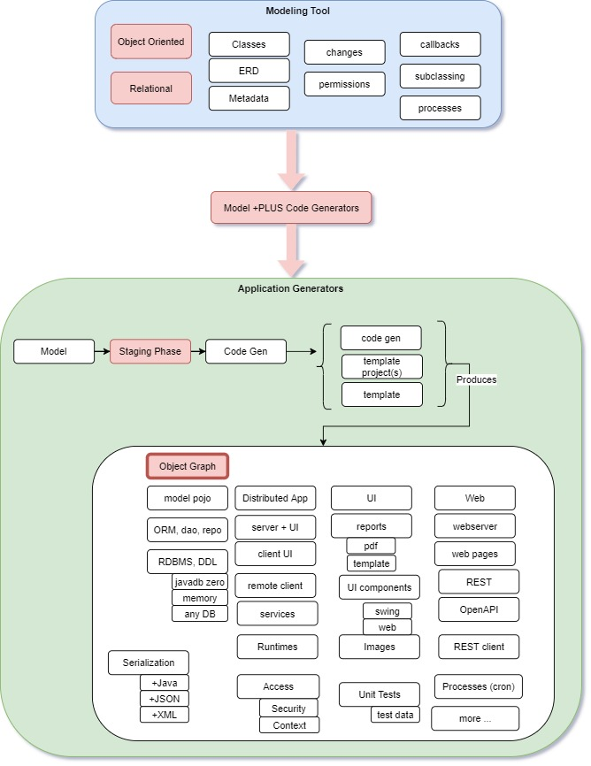

The design process is interactive, where Software Architects are able to design and work directly with customers, users, developers, etc.
Besides being a Software Modeling tool, OABuilder is a "code generator for creating code generators", which means that it can be used to create custom code generators for building any type of application, process, standards, etc.
OABuilder includes code generators for building "Proof of Concepts" in a mater of minutes, which helps improve and accelerate the design and modeling process.
OABuilder is used for defining everything from the entity classes, entity relationships, searching, user interface, database, security & access, filters, processes, event handling, callbacks, reports, REST, openAPI and more. This information is then used to drive the requirements and development process.

The Model
A Model is a representation of the details that are needed within a software application or platform.
These "details" are driven by software patterns based on object oriented programming, relational databases, rules engines, algorithms, and computer science techniques.
With OABuilder, Software Architects are able to capture as much detail as possible, which can then be used for formal documentation and requirements, code generation, standards, testing, and more.
What's in a Model